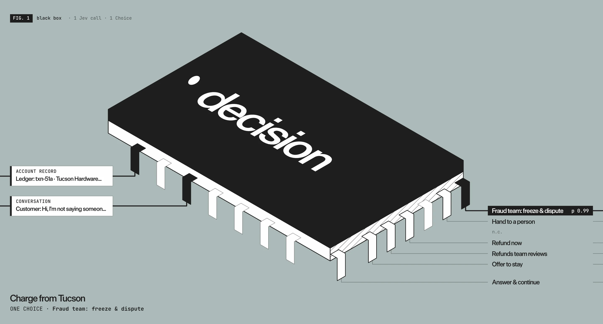
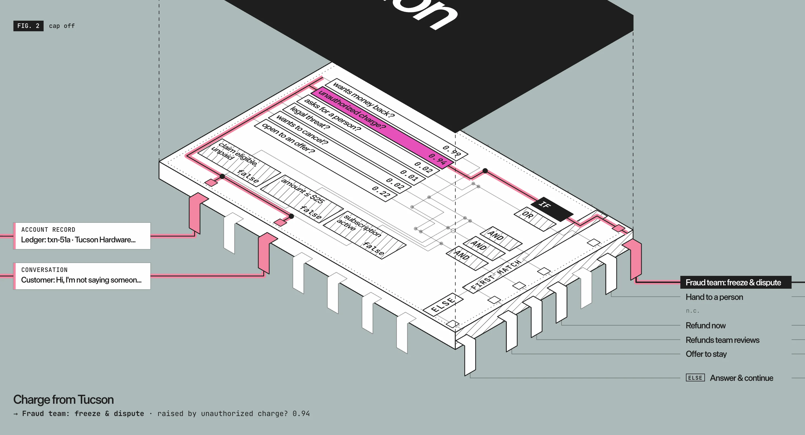
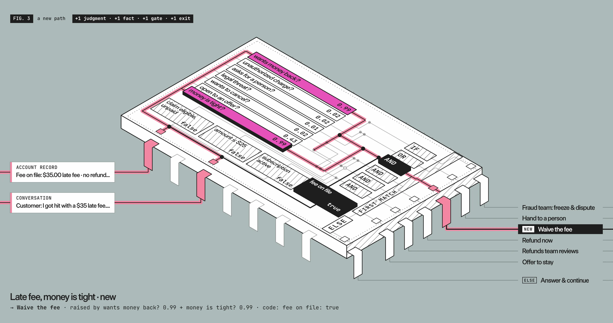

Đừng gọi đó là mô hình ra quyết định
Bản dịch tiếng Việt từ Don’t Call It a Decision Model. Không thấy giấy phép tái sử dụng được nêu trên trang bài viết khi kiểm tra; bản quyền nội dung và hình minh họa thuộc tác giả/TypeSafe AI (typesafe.ai). Các đoạn mã và định danh giữ nguyên tiếng Anh. Phần TL;DR, Know-how & Insight và mindmap là nội dung bổ sung của người dịch.
TL;DR
- Jev đưa ra nhận định; mã nguồn đưa ra quyết định. TypeSafe gọi Jev là mô hình System One, thay vì mô hình ra quyết định.
- Đừng nhồi cả quy trình nghiệp vụ vào một câu hỏi
choice. Hãy tách các nhận định cần hiểu ngữ nghĩa khỏi dữ kiện và quy tắc có thể tính chính xác bằng mã. - Kết hợp nhận định của mô hình với logic tường minh giúp hiểu thiết kế, truy vết nguyên nhân và mở rộng quy trình mà không phải sửa một prompt khổng lồ.
Ba chế độ đọc: dùng 3 nút tròn ở góc dưới bên phải để chuyển nhanh (trên điện thoại, ba nút nằm thành một thanh ở cuối màn hình để không đè chữ bên phải). VI — bản dịch tiếng Việt đầy đủ, theo từng đoạn. EN — bản tiếng Anh, không tách cụm. Cụm (mặc định, biểu tượng A gạch dưới) — tiếng Anh tách thành các cụm theo mệnh đề; rê chuột hoặc chạm vào một cụm để xem nghĩa tiếng Việt. Chạm lần nữa hoặc chạm ra ngoài để đóng; với cụm chứa liên kết, trên điện thoại chạm lần đầu để xem nghĩa, chạm lần hai để mở liên kết. Chế độ được ghi nhớ trên máy này; có thể mở thẳng bằng ?mode=vi, ?mode=en hoặc ?mode=chunk.
Jev đưa ra nhận định, mã nguồn đưa ra quyết định.
Jev makes judgments; code makes decisions.
Jev makes judgments; code makes decisions.
Chúng tôi rất vui khi mọi người nhận ra tầm quan trọng của nhóm mô hình mới mà Jev đã tiên phong. Không có gì ngạc nhiên khi thuật ngữ “mô hình ra quyết định” trở nên phổ biến để gọi nhóm này. Lần đầu thấy Jev chọn một phương án từ danh sách, bạn rất dễ nghĩ rằng nó đang ra quyết định — và quả thực chính chúng tôi cũng từng dùng từ “decision” trong tài liệu hướng dẫn! Vậy tại sao TypeSafe vẫn kiên định gọi Jev là mô hình System One thay vì mô hình ra quyết định? Hãy cùng bàn về điều đó.
We’re thrilled that people are recognizing the new category of models Jev pioneered. It’s no surprise that “decision model” caught on—the first time you see Jev pick an option from a list, it looks like it’s making a decision, and we even used “decision” in our own docs! So why does TypeSafe insist on calling Jev a System One model instead? Let’s talk about it.
We’re thrilled that people are recognizing the new category of models Jev pioneered. It’s no surprise that “decision model” caught on—the first time you see Jev pick an option from a list, it looks like it’s making a decision, and we even used “decision” in our own docs! So why does TypeSafe insist on calling Jev a System One model instead? Let’s talk about it.
Vấn đề nằm ở vị trí của Jev trong một hệ thống
The problem is where Jev sits in a system
The problem is where Jev sits in a system
Hãy phân tích một hệ thống điển hình bằng phép so sánh với mạch điện: đầu vào ở bên trái (dữ liệu, trạng thái ứng dụng, v.v.), chảy qua phần logic rồi tạo ra đầu ra ở bên phải. Lấy một phiên bản đơn giản hóa của quy trình Chăm sóc khách hàng trên trang đánh giá của chúng tôi làm ví dụ. Cách tiếp cận sơ khai khi dùng Jev trong quy trình này là đưa toàn bộ quyết định vào một câu hỏi Jev duy nhất:
Think of a typical system like a circuit: inputs enter on the left (data, app state, etc.), flow through logic, and produce outputs on the right. Take a simplified version of the Customer Support workflow from our evals page. The naive way to use Jev here is to cram the entire decision into one Jev question:
Think of a typical system like a circuit: inputs enter on the left (data, app state, etc.), flow through logic, and produce outputs on the right. Take a simplified version of the Customer Support workflow from our evals page. The naive way to use Jev here is to cram the entire decision into one Jev question:

Khi lần đầu nhìn thấy Jev, mọi người thường hình dung nó sẽ nằm trong hệ thống như thế này: cung cấp toàn bộ trạng thái và để nó quyết định điều gì nên xảy ra. Thường thì cách làm này trông giống một câu hỏi Choice lớn, với rất nhiều mô tả bằng ngôn ngữ tự nhiên về logic nghiệp vụ và các điều kiện ngoại lệ được nhồi vào trường criteria.
When people first see Jev, they often picture it sitting like this: hand it the entire state and let it decide what happens. Usually that turns into one giant Choice question packed with natural-language business logic and exceptions inside criteria.
When people first see Jev, they often picture it sitting like this: hand it the entire state and let it decide what happens. Usually that turns into one giant Choice question packed with natural-language business logic and exceptions inside criteria.
Dù có thể hoạt động, cách này sẽ sớm khiến bạn phải làm điều chúng tôi gọi là “nhào lộn với prompt”: sửa đi sửa lại các phần giải thích điều kiện dài dòng để xử lý từng trường hợp biên. Rồi hôm sau, một đầu vào bạn chưa nghĩ tới xuất hiện, hệ thống thất bại, và bạn lại quay về nhồi thêm ngoại lệ cùng những lời làm rõ vào phần văn xuôi trong criteria.
It can work for a while, yet soon forces you into “prompt gymnastics”—constantly tweaking wordy conditional prose for edge cases. Tomorrow an unforeseen input breaks it, and you are right back to stuffing more exceptions into criteria.
It can work for a while, yet soon forces you into “prompt gymnastics”—constantly tweaking wordy conditional prose for edge cases. Tomorrow an unforeseen input breaks it, and you are right back to stuffing more exceptions into criteria.
Điều đang diễn ra ở đây là đặt trí thông minh vào sai tầng trừu tượng. Hệ thống của bạn vốn đã biết tiêu chí cho từng kết quả dự kiến, và chỉ một phần trong số đó thực sự cần đến nhận định. Phần còn lại là logic chính xác, rành mạch:
That puts intelligence at the wrong layer of abstraction. Your system already knows the criteria for each outcome, and only part of them truly requires judgment; the rest is crisp, deterministic logic:
That puts intelligence at the wrong layer of abstraction. Your system already knows the criteria for each outcome, and only part of them truly requires judgment; the rest is crisp, deterministic logic:
| Khi | Nhánh đầu ra |
|---|---|
| Báo có khoản thu chưa được cho phép | Nhóm chống gian lận: phong tỏa và khiếu nại giao dịch |
| Yêu cầu gặp người thật hoặc đe dọa thực hiện hành động pháp lý | Chuyển cho người thật |
| Muốn lấy lại tiền, yêu cầu đủ điều kiện, ≤ 25 USD | Hoàn tiền ngay |
| Muốn lấy lại tiền, yêu cầu đủ điều kiện, trên 25 USD | Nhóm hoàn tiền xem xét |
| Muốn hủy, gói đăng ký đang hoạt động, sẵn sàng cân nhắc ưu đãi | Đưa ra đề nghị giữ chân |
| Các trường hợp còn lại | Trả lời và tiếp tục |
Vậy Jev nằm ở đâu trong kiểu hệ thống này? Để hiểu câu trả lời, chúng ta cần nhìn vào bên trong xem một quyết định thực sự được tạo nên từ những gì:
So where does Jev fit? To see the answer, we have to look inside what a decision is actually made of:
So where does Jev fit? To see the answer, we have to look inside what a decision is actually made of:
Mở nắp ra
Popping the hood
Popping the hood
Quyết định trong hệ thống hiếm khi là một lựa chọn nguyên tử duy nhất. Mở nắp ra, ta thấy những đường dây đi từ đầu vào qua các nút mã nguồn và các nút nhận định. Quyết định trong phần mềm, quy trình và hoạt động kinh doanh được xây dựng theo cách đó. Kiểm tra “yêu cầu đủ điều kiện, chưa được thanh toán” là chuyện tính toán. Trả lời “người dùng có muốn lấy lại tiền không?” cần đến nhận định. Đó là nơi Jev thuộc về, và cũng chính là điều chúng tôi muốn nói khi dùng tên System One: những nhận định nhanh, mang tính trực giác mà một người am hiểu đưa ra trong vài giây.
System decisions are rarely a single atomic choice. Pop the hood and you see wires routing inputs through code nodes and judgment nodes—just how software, processes, and business rules are built. Checking “eligible, not yet refunded” is computation; answering “does the user want money back?” requires judgment. That is where Jev belongs—what we mean by System One: fast, intuitive judgments a knowledgeable person makes in seconds.
System decisions are rarely a single atomic choice. Pop the hood and you see wires routing inputs through code nodes and judgment nodes—just how software, processes, and business rules are built. Checking “eligible, not yet refunded” is computation; answering “does the user want money back?” requires judgment. That is where Jev belongs—what we mean by System One: fast, intuitive judgments a knowledgeable person makes in seconds.

Mã nguồn rất giỏi trả lời những điều nó có thể trả lời chính xác. Jev chỉ trả lời những câu hỏi nhỏ mà mã nguồn không thể. Sau đó, logic kết hợp những câu trả lời ấy thành quyết định. Chính sự kết hợp giữa nhận định và mã nguồn cho phép hệ thống đưa ra những quyết định đáng tin cậy, có thể quan sát và truy vết.
Code excels at what it can answer deterministically; Jev answers only the small questions code cannot. Logic then combines those answers into a decision—producing reliable, observable, and traceable outcomes.
Code excels at what it can answer deterministically; Jev answers only the small questions code cannot. Logic then combines those answers into a decision—producing reliable, observable, and traceable outcomes.
Vì sao nên xây dựng theo cách này
Why build this way
Why build this way
1. Thiết kế rõ ràng
1. Clear design
1. Clear design
Hệ thống đáng tin cậy đòi hỏi phải hiểu rõ cách các quyết định được đưa ra. Bằng cách phân rã quyết định thành những nhận định nguyên tử và các đường đi logic, chúng ta hiểu rõ hơn điều gì thực sự đi qua hệ thống, cũng như những trường hợp biên cần xử lý.
Reliable systems demand clarity on how decisions are made. Decomposing decisions into atomic judgments and explicit logic paths reveals what actually flows through your system and which edge cases need handling.
Reliable systems demand clarity on how decisions are made. Decomposing decisions into atomic judgments and explicit logic paths reveals what actually flows through your system and which edge cases need handling.
2. Khả năng quan sát
2. Observability
2. Observability
Trong ví dụ gộp mọi thứ vào một nhận định ở trên, bạn sẽ viết một câu hỏi Choice duy nhất, nhồi đầy tiêu chí:
In the single-judgment approach above, you write one Choice question stuffed with criteria:
In the single-judgment approach above, you write one Choice question stuffed with criteria:
{
"model": "jev-latest",
"state": {
"conversation": "Customer: Hi, I'm not saying someone stole my card or anything, but t…",
"account": "Ledger: txn-51a · Tucson Hardware Supply · $240.00 · Aug 14 · card pr…"
},
"questions": {
"action": {
"type": "choice",
"instructions": "What should support do with this conversation?",
"criteria": {
"fraud_team": "The customer reports a charge, withdrawal, login, or account change they did not make or authorize. Pick this even if they also want a refund, ask for a person, or want to cancel.",
"handoff_person": "The customer asks for a person, a manager, or a supervisor, or threatens legal action, a lawyer, or a regulator. Not if they report an unauthorized charge.",
"instant_refund": "The customer wants money back, the refund claim on the account is eligible and not already refunded, and the amount is $25 or less. Not if they report an unauthorized charge or ask for a person.",
"refunds_team": "The customer wants money back, the refund claim on the account is eligible and not already refunded, and the amount is over $25. Not if they report an unauthorized charge or ask for a person.",
"retention_offer": "The customer wants to cancel, close, or downgrade, the subscription is active, and they would stay if something were offered or fixed. Not if any option above applies.",
"answer": "None of the above. Answer the customer and continue the conversation, with no action on the account."
}
}
}
}Khi một trường hợp bị chuyển đến nơi không mong đợi, dữ liệu duy nhất bạn có về nguyên nhân chỉ là một con số xác suất. Nhận định nào có vai trò quyết định? Quy tắc nào? Không có gì bên trong để đọc.
When a case gets routed unexpectedly, all you have is a single probability score—no clue which judgment or which rule tipped the scale.
When a case gets routed unexpectedly, all you have is a single probability score—no clue which judgment or which rule tipped the scale.
Nhưng khi mở nắp ra, ta có các bản ghi như sau:
Pop the hood, and you get traces like this:
Pop the hood, and you get traces like this:
exit fraud_team
├─ g_fraud reports an unauthorized charge (p > 0.6) true ← decided
├─ g_person asks for a person, or threatens legal action … –
├─ g_instant wants money back, claim eligible, amount ≤ $25 –
├─ g_large wants money back, claim eligible, amount over… –
├─ g_offer wants to cancel, subscription active, open to… –
└─ else answer –
judgments · Jev
wants_money_back 0.99
reports_unauthorized 0.94 ←
requests_human 0.02
threat_legal 0.01
wants_to_cancel 0.02
open_to_offer 0.22
facts · your code
refund_eligible false
small_refund false
subscription_active falseThay vì “mô hình đã chọn fraud_team”, bạn nhận được “mô hình đã đưa ra sáu nhận định này, và đây là đường đi logic tiếp theo”. Dấu vết cho thấy reports_unauthorized đã đưa trường hợp đó tới nhóm chống gian lận. Giờ đây, chúng ta có dữ liệu quan sát thực sự để dựa vào mà hành động. Nhận định sai, hay quy tắc sai? Dấu vết giúp bạn phân biệt, và cách sửa có thể tập trung hơn nhiều.
Instead of “the model picked fraud_team,” you get “the model made these six judgments, and here is the logic path that followed.” You can tell whether a judgment misfired or a rule was wrong—making fixes surgical.
Instead of “the model picked fraud_team,” you get “the model made these six judgments, and here is the logic path that followed.” You can tell whether a judgment misfired or a rule was wrong—making fixes surgical.
3. Khả năng mở rộng
3. Scalability
3. Scalability
Giả sử đột nhiên bạn có thêm hai nhánh đầu ra mới, hoặc ba mươi nhánh! Khi hệ thống được thiết kế với cách phân rã tốt, bạn chỉ cần vạch ra logic dẫn tới những nhánh mới đó, thêm bất kỳ nhận định mới nào chúng cần, và tất cả các nhận định hiện có đã được lựa chọn cẩn thận vẫn giữ nguyên.
Suppose you suddenly add two—or thirty—new outcomes! With clean decomposition, you simply wire the new logic, add any new judgments needed, and leave all existing calibrated judgments untouched.
Suppose you suddenly add two—or thirty—new outcomes! With clean decomposition, you simply wire the new logic, add any new judgments needed, and leave all existing calibrated judgments untouched.

Ở đây, ta thấy phần mở rộng “Miễn khoản phí”: một nhận định mới, một dữ kiện mới được tính bằng mã nguồn, còn phần còn lại của hệ thống vẫn giữ nguyên. Vì tất cả nhận định của Jev được đánh giá độc lập với nhau, chúng ta không phải lo những nhận định mới ảnh hưởng đến các nhận định đã được kiểm chứng.
Here, adding a “Fee waiver” branch requires one new judgment and one new code-computed fact while leaving the rest intact. Because Jev evaluates judgments independently, new ones do not perturb already-tested ones.
Here, adding a “Fee waiver” branch requires one new judgment and one new code-computed fact while leaving the rest intact. Because Jev evaluates judgments independently, new ones do not perturb already-tested ones.
Chúng tôi mời bạn thử phác họa phần bên trong của một quyết định trong ứng dụng của mình. Đánh dấu những chỗ tra cứu và tính toán, rồi viết một câu hỏi bên cạnh mỗi chỗ cần đến nhận định. How to build with TypeSafe trình bày cách phân rã câu hỏi và kết hợp câu trả lời bằng mã nguồn; các mẫu thiết kế giới thiệu thêm những cách kết nối chúng.
Try sketching the inside of one decision in your own app: mark lookups and computations, and jot down a question wherever judgment is needed. How to build with TypeSafe and our design patterns show how to decompose questions and wire them with code.
Try sketching the inside of one decision in your own app: mark lookups and computations, and jot down a question wherever judgment is needed. How to build with TypeSafe and our design patterns show how to decompose questions and wire them with code.
Bạn gặp khó khăn khi tìm cách phân rã các nhận định trong hệ thống của mình? Các coding agent thường đặc biệt giỏi hiểu những kiểu hệ thống này! Hãy thử chỉ cho agent của bạn bài viết này và yêu cầu nó tìm những vị trí trong hệ thống hoặc mã nguồn phù hợp với các nhận định nguyên tử. Nếu thích trao đổi trực tiếp với con người hơn, hãy ghé Discord của chúng tôi, nơi cả đội ngũ lẫn cộng đồng những người xây dựng sản phẩm đều sẵn lòng giúp đỡ!
Struggling to break down judgments in your codebase? Coding agents are surprisingly good at spotting where atomic judgments belong—point yours at this post, or drop into our Discord to chat with the team and community!
Struggling to break down judgments in your codebase? Coding agents are surprisingly good at spotting where atomic judgments belong—point yours at this post, or drop into our Discord to chat with the team and community!
Jev đưa ra nhận định, mã nguồn đưa ra quyết định.
Jev makes judgments; code makes decisions.
Jev makes judgments; code makes decisions.
Know-how & Insight
Ghi chú của người dịch — không thuộc nguyên văn bài gốc
- Tách “hiểu ý” khỏi “kiểm tra điều kiện”. Trong ví dụ của bài, xác định khách có muốn hoàn tiền là nhận định ngữ nghĩa; kiểm tra số tiền ≤ 25 USD và trạng thái đăng ký thuộc phần logic mã nguồn. Lập danh sách hai nhóm này trước khi thiết kế câu hỏi cho mô hình.
- Ghi cả nhận định lẫn đường đi quy tắc. Bản ghi minh họa có sáu nhận định, ba dữ kiện và nhánh được chọn. Nhờ vậy, người vận hành có thể kiểm tra sai ở bước hiểu nội dung hay ở điều kiện định tuyến, thay vì chỉ biết nhãn đầu ra cuối cùng.
- Đừng biến ngưỡng minh họa thành mặc định chung.
p > 0.6và mức 25 USD xuất hiện trong ví dụ chăm sóc khách hàng này; bài không chứng minh chúng phù hợp cho mọi hệ thống. - Phân biệt nhận định kiến trúc với cam kết chất lượng. Tác giả nói các nhận định của Jev được đánh giá độc lập; đó không phải là bằng chứng mọi nhận định đều đúng. Khi thêm nhánh, vẫn cần kiểm tra các điều kiện và tình huống liên quan đến nhánh đó.
Nguồn đối chiếu: bài gốc của Allie Laabs. Các đề xuất thực hành ở đây được rút ra từ những ví dụ trong bài, không phải số liệu benchmark hay bảo đảm của TypeSafe.
Mindmap
mindmap
root((Nhận định và quyết định))
Jev
Hiểu ý người dùng
Nhận định nhỏ
System One
Mã nguồn
Tra cứu dữ kiện
Tính toán chính xác
Kết hợp quy tắc
Thiết kế
Tách trách nhiệm
Tránh prompt khổng lồ
Quan sát
Ghi nhận định
Ghi đường đi
Tìm nguyên nhân
Mở rộng
Thêm nhánh mới
Giữ phần đã kiểm chứng